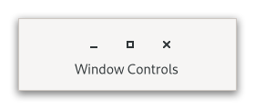

Gtk.WindowControls¶
Example¶

- Subclasses:
None
Methods¶
- Inherited:
Gtk.Widget (183), GObject.Object (37), Gtk.Accessible (17), Gtk.Buildable (1)
- Structs:
class |
|
|
|
|
|
|
|
|
|
|
Virtual Methods¶
- Inherited:
Gtk.Widget (25), GObject.Object (7), Gtk.Accessible (6), Gtk.Buildable (9)
Properties¶
- Inherited:
Name |
Type |
Flags |
Short Description |
|---|---|---|---|
r/w/en |
|||
r/en |
|||
r/w/en |
|||
r/w/en |
Signals¶
- Inherited:
Fields¶
- Inherited:
Class Details¶
- class Gtk.WindowControls(**kwargs)¶
- Bases:
- Abstract:
No
- Structure:
Shows window frame controls.
Typical window frame controls are minimize, maximize and close buttons, and the window icon.
<picture> <source srcset=”windowcontrols-dark.png” media=”(prefers-color-scheme: dark)”> <img alt=”An example
Gtk.WindowControls" src=”windowcontrols.png”> </picture>GtkWindowControlsonly displays start or end side of the controls (see [property`Gtk`.WindowControls:side]), so it’s intended to be always used in pair with anotherGtkWindowControlsfor the opposite side, for example:```xml <object class=”
Gtk.Box"> <child> <object class=”Gtk.WindowControls"> <property name=”side”>start</property> </object> </child>…
<child> <object class=”
Gtk.WindowControls"> <property name=”side”>end</property> </object> </child> </object> ```- CSS nodes
`` windowcontrols ├── [image.icon] ├── [button.minimize] ├── [button.maximize] ╰── [button.close] ``
A
GtkWindowControls’ CSS node is called windowcontrols. It contains subnodes corresponding to each title button. Which of the title buttons exist and where they are placed exactly depends on the desktop environment and [property`Gtk`.WindowControls:decoration-layout] value.When [property`Gtk`.WindowControls:empty] is true, it gets the .empty style class.
- Accessibility
GtkWindowControlsuses the [enum`Gtk`.AccessibleRole.group] role.- classmethod new(side)[source]¶
- Parameters:
side (
Gtk.PackType) – the side- Returns:
a new
GtkWindowControls- Return type:
Creates a new
GtkWindowControls.
- get_empty()[source]¶
- Returns:
true if the widget has window buttons
- Return type:
Gets whether the widget has any window buttons.
- get_side()[source]¶
- Returns:
the side
- Return type:
Gets the side to which this window controls widget belongs.
- get_use_native_controls()[source]¶
- Returns:
true if native window controls are shown
- Return type:
Returns whether platform native window controls are shown.
New in version 4.18.
- set_decoration_layout(layout)[source]¶
-
Sets the decoration layout for the title buttons.
This overrides the [property`Gtk`.Settings:gtk-decoration-layout] setting.
The format of the string is button names, separated by commas. A colon separates the buttons that should appear on the left from those on the right. Recognized button names are minimize, maximize, close and icon (the window icon).
For example, “icon:minimize,maximize,close” specifies a icon on the left, and minimize, maximize and close buttons on the right.
If [property`Gtk`.WindowControls:side] value is [enum`Gtk`.PackType.start], self will display the part before the colon, otherwise after that.
- set_side(side)[source]¶
- Parameters:
side (
Gtk.PackType) – a side
Determines which part of decoration layout the window controls widget uses.
See [property`Gtk`.WindowControls:decoration-layout].
- set_use_native_controls(setting)[source]¶
- Parameters:
setting (
bool) – true to show native window controls
Sets whether platform native window controls are used.
This option shows the “stoplight” buttons on macOS. For Linux, this option has no effect.
See also Using GTK on Apple macOS.
New in version 4.18.
Property Details¶
- Gtk.WindowControls.props.decoration_layout¶
- Name:
decoration-layout- Type:
- Default Value:
- Flags:
The decoration layout for window buttons.
If this property is not set, the [property`Gtk`.Settings:gtk-decoration-layout] setting is used.
- Gtk.WindowControls.props.empty¶
- Name:
empty- Type:
- Default Value:
- Flags:
Whether the widget has any window buttons.
- Gtk.WindowControls.props.side¶
- Name:
side- Type:
- Default Value:
- Flags:
Whether the widget shows start or end side of the decoration layout.
See [property`Gtk`.WindowControls:decoration_layout].
- Gtk.WindowControls.props.use_native_controls¶
- Name:
use-native-controls- Type:
- Default Value:
- Flags:
Whether to show platform native close/minimize/maximize buttons.
For macOS, the [property`Gtk`.HeaderBar:decoration-layout] property controls the use of native window controls.
On other platforms, this option has no effect.
See also Using GTK on Apple macOS.
New in version 4.18.